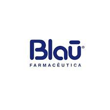
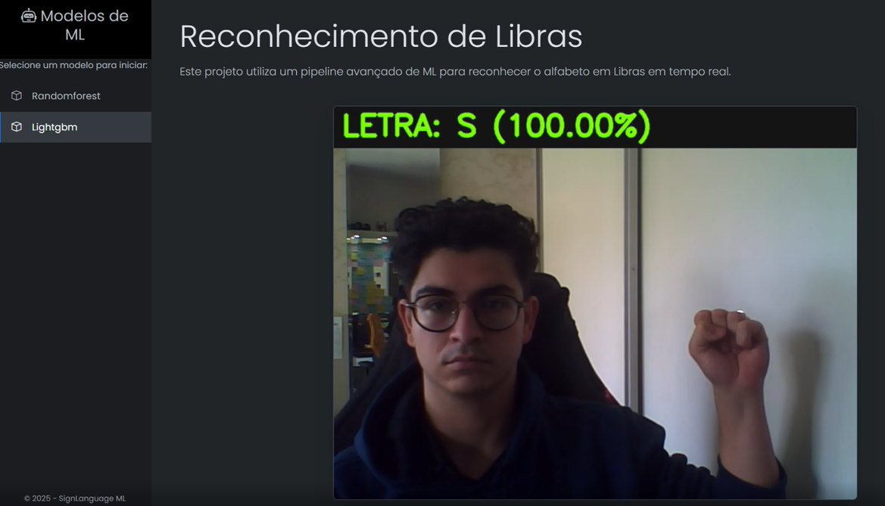
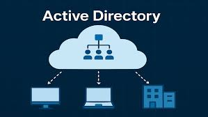
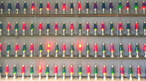

Olá, eu sou
Samuel Mauli
Transformando ideias em soluções tecnológicas inovadoras. Especializado em Fintech, Martech e Inteligência Artificial.

Scroll para explorar
01. Sobre Mim
Desenvolvedor Full Stack
Sou Samuel Mauli, desenvolvedor apaixonado por tecnologia e inovação. Atualmente trabalho no Grupo Negócios Públicos como Desenvolvedor Full Stack, mergulhando nos desafios dos mercados de Fintech e Martech.
Minha jornada inclui o desenvolvimento de sistemas complexos, desde sistemas de gestão comercial até integrações seguras com instituições bancárias. A projetos complexos de inteligência artificial e visão computacional. Tenho experiência com diversas tecnologias, incluindo Laravel, Python e React.
Grande tive diversas oporotunidades em projetos internacionais, aprimorando minhas habilidades técnicas e de comunicação. Estou sempre em busca de novos desafios e oportunidades para crescer e contribuir com soluções inovadoras.
02. Experiência Profissional
Full Stack Developer
Grupo Negócios Públicos Jul 2025 - o momentoComo Desenvolvedor Full Stack, mergulhei nos desafios dos mercados de Martech e Fintech para entregar soluções tecnológicas que impulsionam o negócio. Minha atuação envolveu o desenvolvimento de ponta a ponta de sistemas complexos, desde plataformas de gestão comercial até a integração segura com instituições bancárias para processamento de pagamentos. Utilizando um stack tecnológico versátil com Laravel, Python e React, não apenas construí novas funcionalidades, mas também desenvolvi ferramentas internas que otimizaram processos e aumentaram a produtividade da equipe. O ponto alto dessa experiência foi a criação de um sistema de Active Directory customizado, um projeto que resolveu a necessidade crítica de um controle de acesso granular e centralizado. Essa jornada proporcionou um aprendizado fantástico sobre as regras de negócio, permitindo-me traduzir as necessidades do mercado em software funcional e eficiente.
Java Developer
Meisters Solutions Ago 2024 - Jul 2025Atuei com desenvolvimento e sustentação de sistemas, com foco em soluções escaláveis, automação de processos e integração de Inteligência Artificial. Tive experiência em ambientes de missão crítica e projetos com grande impacto operacional, utilizando tecnologias modernas e legadas. Principais responsabilidades e conquistas: Atuei na sustentação e evolução de sistema legado em Java 8 com Apache Tomcat e MySQL, rodando em ambiente Linux. Desenvolvi um sistema para um dos maiores centros de cuidados a idosos da Europa, utilizando PHP (procedural) com Apache, MySQL e integração com jQuery e sistemas internos. Criei uma plataforma fiscal para gestão completa de NF-e, CT-e e NFS-e, utilizando Laravel, PHP 8, MySQL e APIs REST. Automatizei processos internos, reduzindo tarefas manuais que levavam em média 1 hora para menos de 5 minutos, com uso de scripts Python e agendamentos em Linux (cron) e Windows Server (Tarefas Agendadas). Criei ferramentas de Inteligência Artificial, com foco em análise preditiva e suporte à decisão, usando Python, TensorFlow, PyTorch e Scikit-learn. Desenvolvi dois sistemas beta com IA: Ballesol CareAI um agente de IA com criptografia de ponta a ponta, que fornecia informações em tempo real diretamente do banco de dados via API REST, hospedado em AWS EC2. BlauSight um sistema de gestão da qualidade para a indústria farmacêutica, que integrava Flask + React com IA generativa para automação de processos internos, análise de desvios, classificação e plano de ação. Prestei apoio à análise de sistemas, levantamento de requisitos, elaboração de relatórios técnicos e acompanhamento de todo o ciclo de desenvolvimento de software. Stack tecnológica utilizada: Java 8, Apache Tomcat, PHP (procedural e Laravel), Node.js, React, Python, Flask, TensorFlow, PyTorch, Scikit-learn, MySQL, AWS (EC2, S3), Docker, jQuery, REST APIs, Linux, Windows Server.
Agente de Suporte de TI
Positivo Tecnologia Dez 2023 - Jul 2024Fiz parte do time de Tech Services da Positivo, onde desempenhei um papel importante no suporte técnico para a International Meal Company (IMC). Minhas atividades envolviam a administração do backlog, cuidando da distribuição das demandas entre os colegas da equipe. Busquei seguir as boas práticas da ITIL para avaliar a criticidade dos chamados de maneira mais eficiente. Além disso, mantive uma comunicação direta com os fornecedores, lidando com questões técnicas relacionadas a diversas tecnologias e sistemas fundamentais para o suporte à IMC. Nesse ambiente, percebi que o sucesso do suporte técnico dependia bastante dos conhecimentos individuais de cada membro da equipe e da nossa base de conhecimento específica do projeto. A colaboração constante com os fornecedores foi crucial para resolver problemas mais complexos e manter as operações funcionando sem problemas, contribuindo para a satisfação contínua dos clientes da IMC.
Technical Consultant
TRI CS Inc. Mar 2023 - Ago 2023Atuei em projetos nacionais e internacionais de implementação Oracle, desenvolvendo integrações e aplicativos com Oracle Integration Cloud (OIC) e criando relatórios com Oracle BI Publisher.
Técnico de Suporte N1
ICI - Instituto Curitiba de Informática Ago 2022 - Mar 2023Como Técnico de Suporte N1, fui responsável por fornecer suporte técnico inicial à Prefeitura de Curitiba, solucionando problemas de software e hardware de forma eficiente. Isso envolvia atendimento direto, diagnóstico e correção de erros de sistema, manutenção de equipamentos e, quando necessário, escalonamento de questões mais complexas para outros níveis de suporte. Trabalhei em colaboração constante com equipes de infraestrutura, NOC, técnicos de campo, entre outros, e fornecedores, para garantir soluções rápidas e eficazes, sempre mantendo a comunicação clara com os clientes e documentando todos os chamados para um melhor acompanhamento.
03. Projetos em Destaque
Quimera - Chess AI
Modelo de IA para xadrez com dupla habilidade e modelagem preditiva do oponente. Algoritmos avançados de machine learning.

BlauSight
Sistema de visão computacional avançado para análise e processamento de imagens em tempo real com aplicações em IA.

LibrasNow
Plataforma de acessibilidade para tradução e interpretação de Libras usando inteligência artificial e visão computacional.
ManagerAI
Sistema inteligente de gerenciamento empresarial com IA para otimização de processos e tomada de decisões automatizada.

Sistema Active Directory Customizado
Sistema de controle de acesso granular e centralizado desenvolvido para resolver necessidades críticas de segurança empresarial.

Rust LavaLamp
Projeto educacional inspirado no LavaRand da Cloudflare para geração de entropia criptográfica usando imagens aleatórias.
05. Vamos Conversar?
Entre em Contato
Estou sempre aberto a novas oportunidades e projetos interessantes. Vamos criar algo incrível juntos!